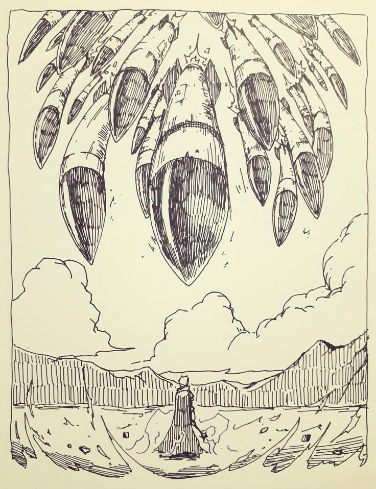

Codex of the Swarm

A ROS 2 and PX4 SITL multi-drone swarm package. It spans single-drone offboard control through to decentralised formation flight, area-coverage missions, collision avoidance and leader-failure reassignment, all driven from a single YAML config and one ros2 launch invocation. It speaks to PX4 through uXRCE-DDS and px4_msgs, not MAVROS.
Of Formation and Order
Three machines rise in a triangle: one leader at the origin, two followers set three paces behind and three to either side. The leader walks its path fifteen metres out and back at five metres' height; the followers keep station in its frame.
Should the leader fall silent, each follower names the lowest-numbered peer still speaking. Every drone reaches the same answer from its own view, and no council is needed.

Of Near Collisions
Three layers keep the machines apart: a clamp holding each setpoint 2.5 m from any peer, a quadratic repulsive velocity up to 4 m/s inside 1.5 m, and a full halt below 0.6 m. Across 98 nights, from 18 May to 24 August 2026, ten fault scenarios were injected and every surviving log re-parsed.
64 of 2,852 completed runs fell below 1.5 m and 37 below 1.0 m; the worst came within 0.22 m. 33 of the 37 hard-floor breaches sit in two scenarios, dds_loss_5 and dds_delay_50.
All three layers read peer position. Degrade the transport and the clamp clamps against stale data, repulsion pushes from a phantom, and the halt never arms.
Under CPU stress at two cores, 441 runs recorded 0 violations with a worst separation of 1.52 m. Leader and follower kills recovered through decentralised reassignment.